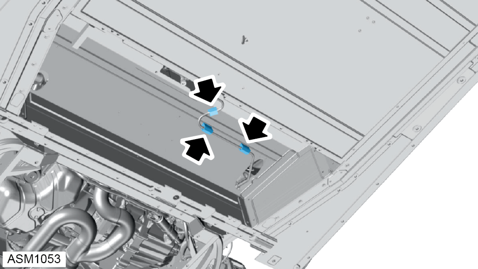
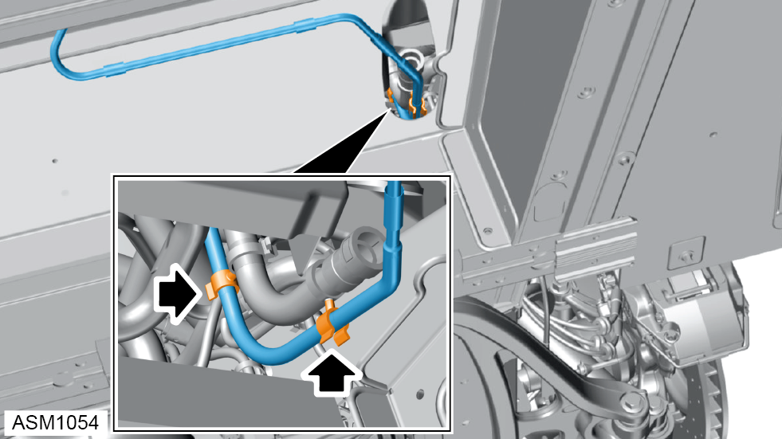
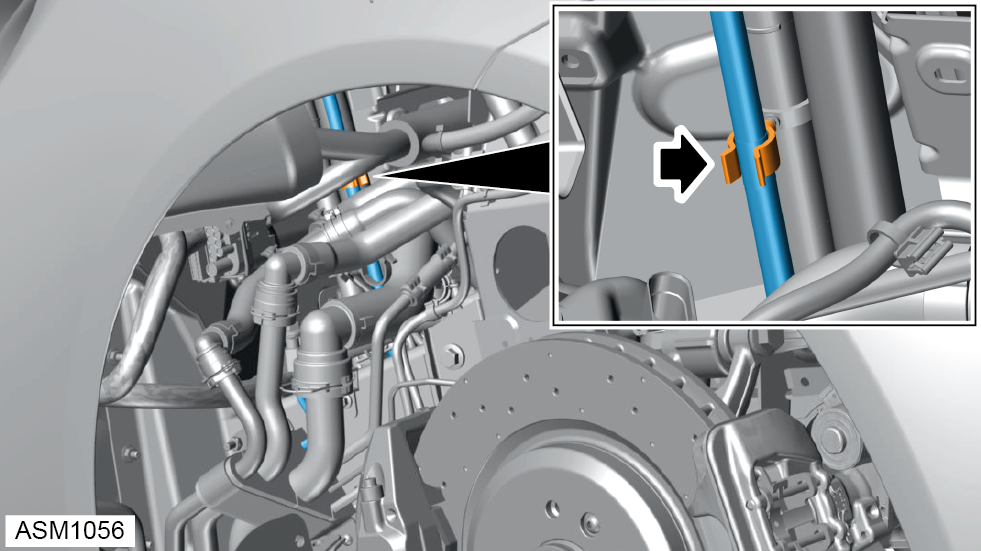
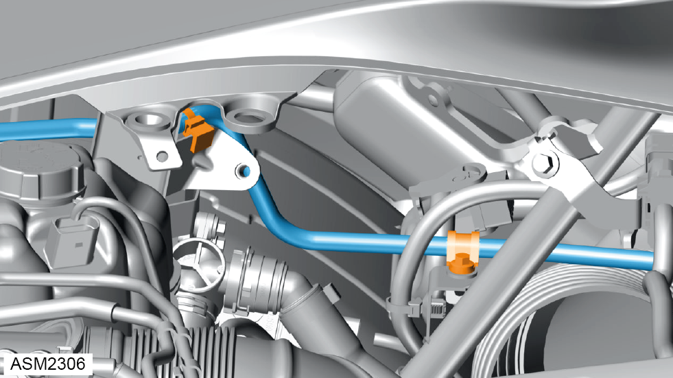
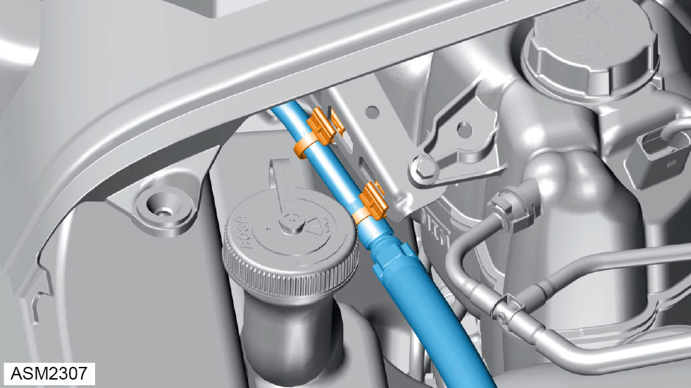
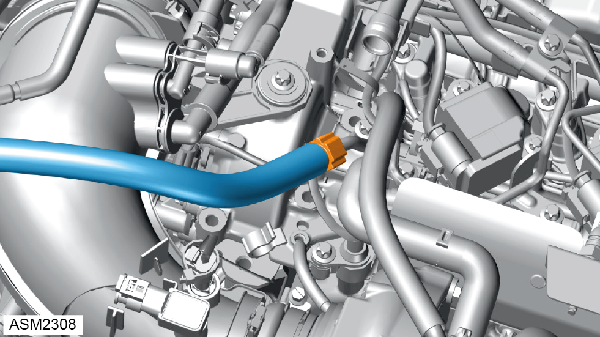
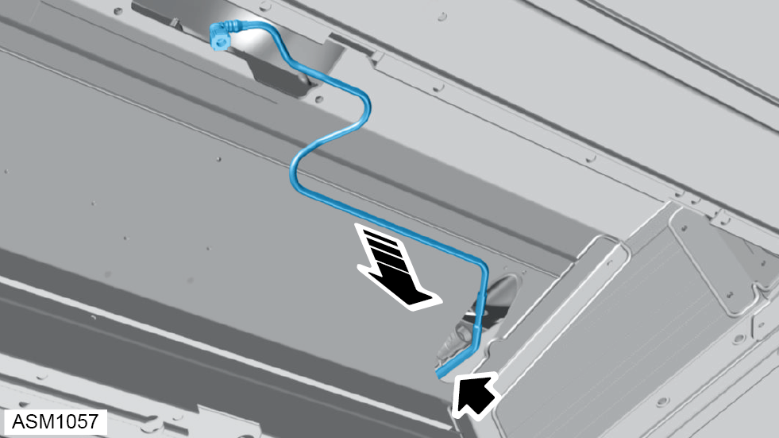

Pipe - Fuel Feed To Engine - 4 Cylinder
Print
Operation Code: 44.03.07-02
Removal
- Depressurise fuel system. Refer to procedure.
- Remove fuel tank. Refer to procedure.

- Release bushings (x3) securing fuel feed pipe to underbody assembly.
- Remove bushings (x3) from fuel feed pipe.

- Release clips (x2) securing fuel feed pipe to evap line.
- Remove rear wheelarch liner left side. Refer to procedure.

- Release clip securing fuel feed pipe to evap line.
- Remove airbox assembly. Refer to procedure.

- Remove M6x12 bolt securing fuel feed pipe to rear subframe stay. Torque 10 Nm.
- Release clip securing fuel feed pipe to bracket.

- Release clips (x2) securing fuel feed pipe to bracket.

- Release quick connector and disconnect fuel feed pipe from engine.
NOTE: Pinch the two buttons on quick connector and pull to remove.
NOTE: Plug quick connector to prevent ingress of dirt.

- Carefully pull fuel feed pipe through aperture in underbody assembly.
- Remove fuel feed pipe.
NOTE: Be prepared to catch any excess fluid.
Installation
- Installation is the reverse of removal procedure.